SatGate Statistics: KE6BLR sorted all of the ground station data by the number of packets heard during July. We hope to fill in the table to help understand the difreence between omni-no-track stations and full track stations.
Your Next Pass: KE6BLR has also written a pass predictor for the next APRS satellites for your location! This data shows that with the 6 active APRS satellites on orbit, generally half the time, you are no more than 30 minutes from the next pass, 75% of the time you are less than 60 minutes to the next pass and 93% of the time your next pass is within 90 minutes as shown at upper right.
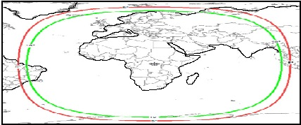
NEW: Geostationary APRS in Europe:
OE3DMB, Andy has experimented successfully with APRS mobile
via the Eastern hemisphere Geostationary AMSAT QO-100.
He uses CHIRP modulation to achieve a good link from an omni
antenna on the roof of his car. Uplink is on 2.4 GHz
and downlink is on 10 GHz band. See his lengthy paper.
.
.
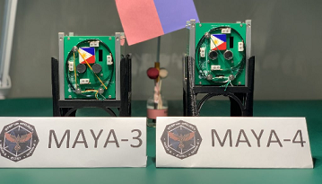
MAYA-3 and MAYA-4 on 145.825 With APRS digipeaters using alias of ARISS
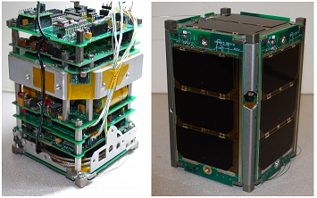
PSAT2 (NO-104) on 145.825 APRS/DTMF/Voice and 435.350 MHz SSTV and PSK31 downlink:
BRICSAT2 (USNAP1)(NO-103) on 145.825 and [USNA14 on 437.605]:
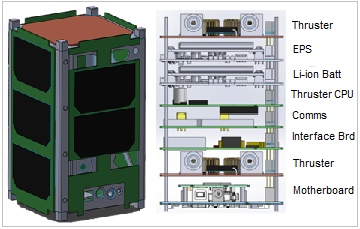
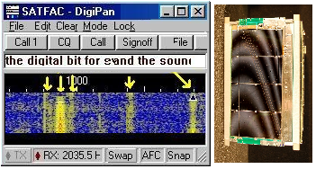
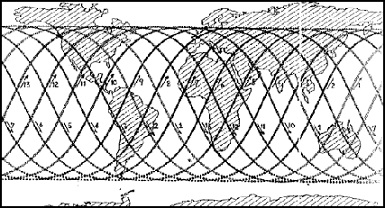
PSAT (NO-84) (USNA) on 145.825 MHz:
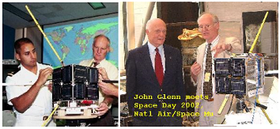
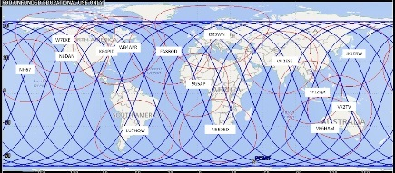
PCSAT (NO-44) (USNA) on 145.825 MHz:
[Uses only the digi path of W3ADO-1]
.
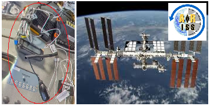
ARISS on International Space Station on 145.825 MHz:
.
.
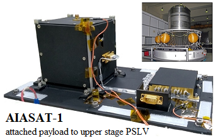
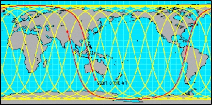
India's AISAT-1 on 145.825 MHz:
.
.
.
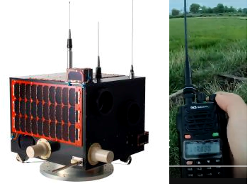
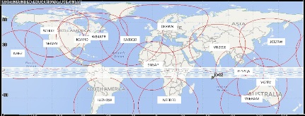
LAPAN-ORARI (IO-86) - APRS digipeater on 145.825 and FM Voice transponder on 435.880/down and 145.880 MHz up.
Launched in Sept 2015, into a 6 degree inclination 650 km orbit that only serves equitorial regions
but does so every 110 minutes near the equator and once a day up to latitudes of 30 deg.
The digipeater is a powerful 5W output.
.
.
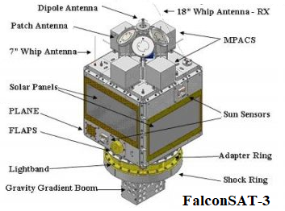
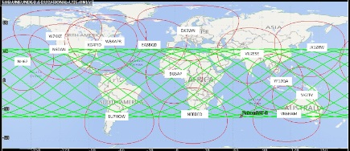
FalconSAT-3 - Special 9600 downlink on 435.103 MHz:
Launched in 2006, into a 35.4 degree inclination orbit, with an altitude of about 470 km.
Supports APRS digipeating but also hosts a Packet Bulletin Board System at 9600 baud
with a 145.840 uplink, and 435.103 downlink. Output power is 1 watt.
.
.
.
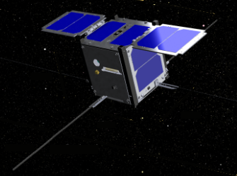
MIRsat-1 - 9600 digipeater downlink on 436.925 MHz:
Deployed from ISS on 23 June 2021.
Only a few days old, it is too soon to know
if it will be available for Digipeating for Field Day.
Initially it will
have the same orbit as the ISS but will drift away over time. Remember to track the uplink and
downlink in +/- 5 KHz steps due to Doppler in opposite directions.
The uplink is on 145.9875 MHz NARROWBAND.
.
.
.
See Sitemap to over 450 of Bob's othe web pages.
.
Enabled from ISS on 7 Oct 2021 in ISS orbit.
maya-3
1 49273U 98067SS 21285.96953269 .00027554 00000-0 48953-3 0 9997
2 49273 51.6413 120.2941 0005565 120.1632 239.9909 15.49963282 1115
maya-4
1 49274U 98067ST 21286.09863284 .00026959 00000-0 47967-3 0 9992
2 49274 51.6413 119.6562 0005462 119.5971 240.5562 15.49933665 1138
Used ARISS or DX3MYA, as path.
.
 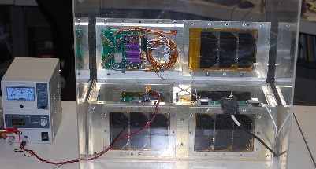
PSAT3 (USNA) had APRS, DTMF Grid/Messaging, Voice synthesizer & SSTV in a PPOD box:
Launch Canceled! on 2 March 2020 so second launch
with PSAT3 is canceled and that ended the
DARPA launch challenge program.
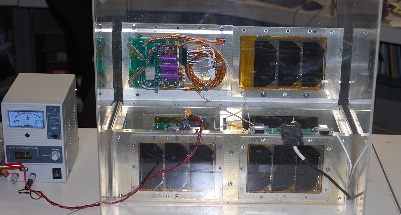
PSAT3 (USNA) had APRS, DTMF Grid/Messaging, Voice synthesizer & SSTV in a PPOD box:
Launch Canceled! on 2 March 2020 so second launch
with PSAT3 is canceled and that ended the
DARPA launch challenge program.
So, PSAT3 is on display in our lab with live telemetry & awaiting any future opportunities.
Launched 25 Jun 2019. 28 degree, 860/300 km orbit. Disappeared August 2019 to April 2021.
Currently in DTMF/Voice mode. UHF is fine with SSTVand PSK31 uplink is on 29.4815 MHz.
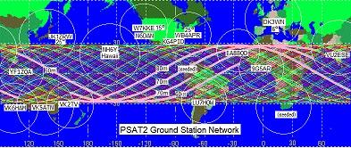
.
Launched 25 June 2019 into 28 degree eliptical orbit, 860/300 km with PSAT2. Unable to turn on Digi.
...
...
...
Launched 20 May 2015 into 55 degree circular orbit at 450 km?
Launched 30 Sept 2001 into 67 degree circular orbit at 800 mile altitude
Amateur Radio on ISS switched to APRS frequency in 2007 and reliable ever since.
Failure in 2021 has digi non-operational at this time.
Not heard since 16 Mar 2021.
Launched on April 1st 0357z 2019 attached to the upper stage of the PSLV C45 mission. It is in a polar orbit
with local passes everywhere 2 or 3 times in a row and then another 2 or 3 twelve hours later.
[Usable only in extreme south of USA]
{kind=link}
{kind=link}
{kind=link}
{kind=link}
{kind=link}